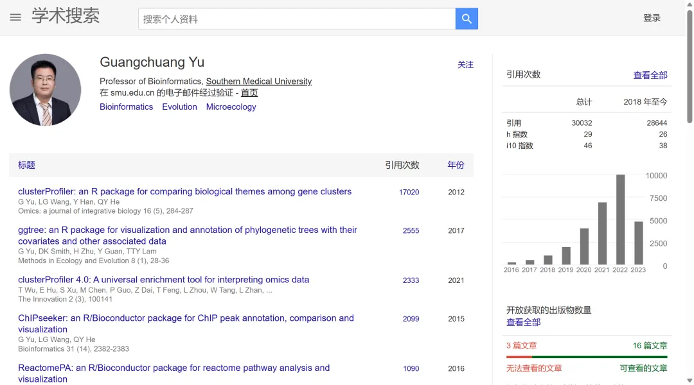

Y门立雪
原文：https://mp.weixin.qq.com/s?__biz=MzAwMzIzOTk5OQ==&mid=2247503091&idx=1&sn=b0f10f303bd9819e351db2030b26eaed&chksm=9b3cb5a3ac4b3cb5011e6e25a311edcfbe903814165b3fd5bb3c01fdb7d45eef4ef5fb488825#rd 合集：漫谈胡侃 / 求职/求学/招聘
开个玩笑，Y门不用立雪。作为总被引次数已逾三万[1]的全球前2% 顶尖科学家[2]，clusterProfiler、ggtree、ChIPSeeker等爆款R包的作者，Y叔本人非常的随和温暖。Y叔也长期招聘博后，大家可以参考：招博士后，请看Y叔真诚的脸

参考：
[1] http://portal.smu.edu.cn/jcyxy/info/1079/3603.htm
[2] https://scholar.lanfanshu.cn/citations?user=DO5oG40AAAAJ&hl=zh-CN&oi=sra